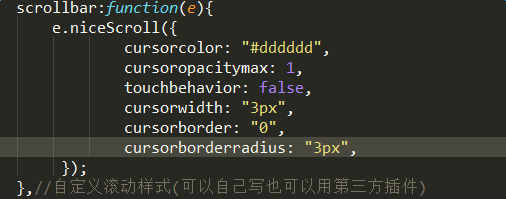
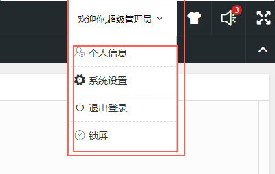

提示：该模块依赖于BKframe控件,除首页其他内页需使用Hupage插件进行编辑操作
主框架：index(首页),使用BKframe插件js
默认显示index.html页面，框架结构以及搭好 ，只需要添加内页和修改样式，基本功能模块都有
scrollbar:function(e){ }自定义滚动条方法(可以自己写也可以用第三方插件)
示例
expand:function(thisBox,settings){
settings.scrollbar($(settings.slide)); //设置显示弹框模块是否需要滚动（自定义）
settings.loading=()初始化加载滚动}//自定义方法
副框架：(除首页),使用Hupage插件js,使用方法和BKframe一样，部分功能相同
expand:function(thisBox, settings) {}//自定义添加方法
弹框盒子模块

弹框盒子模块指定class
'clickBombbox'//用户处理点击事件
'Bombbox'//用于显示点击的内容（默认为不显示该层）
'selected'//当Bombbox层设置显示时添加该class到clickBombbox中，用于点击事件的处理